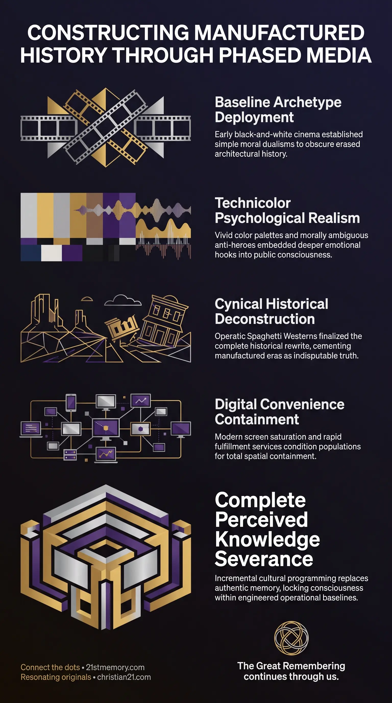

Western movies erased Tartarian history
Western movies erased Tartarian history — Early Western films installed the frontier myth and omitted pre-reset stone cities.
Story Stages is the multi-generational installation of manufactured historical narratives that builds an artificial reality for post-reset cloned populations.
Test your understanding of Story Stages — the phased media installation that builds a counterfeit past after a reset.

Western movies erased Tartarian history — Early Western films installed the frontier myth and omitted pre-reset stone cities.

Engineered History — Phased media programming replaced erased memory with a manufactured past.
Story Stages represents the multi-generational, sequential installation of manufactured historical narratives designed to construct an artificial reality for post-reset cloned populations. Following a catastrophic wipe and population restock, the custodial control structure deploys targeted media and cultural programming in deliberate phases to replace erased human memory with engineered lore. This systematic narrative deployment begins with simplistic foundational myths and progresses through increasingly cynical, detailed, and technologically modern media layers. By conditioning the subconscious through incremental stages, the population absorbs fake historical timelines, societal expectations, and artificial lifestyle models without recognizing the underlying deception. Ultimately, story stages serve as the primary mechanism for matrix integration, transforming a fresh, toolless populace into fully compliant participants within an artificial socio-economic structure.
The deployment of story stages reveals that public history is an artificial construct engineered through multi-generational predictive programming and MK-Ultra conditioning. When a population reset occurs, the newly introduced cloned inhabitants possess no direct memory of past civilisations or advanced architecture. To fill this cognitive vacuum and prevent inquiries into remaining pre-reset structures, custodial managers install a layered fiction through popular culture.
A central revelation is that narrative installation operates via osmotic absorption, meaning the human mind absorbs ambient messaging even when not actively paying attention. Entertainment functions not as harmless leisure, but as a sophisticated tool of psychological distraction and division. By staging narrative evolution across generations—moving from simple black-and-white Westerns to gritty color cinema, suburban consumerism, and digital screen saturation—the control system ensures that each succeeding generation accepts its engineered environment as organic truth.
Furthermore, the progression of story stages is designed to systematically sever perceived knowledge, forcing human consciousness to process reality through false baseline assumptions. By embedding fabricated past eras like the "Wild West" into collective memory, the control apparatus effectively neutralizes natural human curiosity and locks the population into a closed loop of artificial options.
The execution of story stages follows a strict, chronologically calibrated process that transforms a blank-slate population into an acclimatized, controllable society.
The first post-reset narrative stage, active from the 1920s through the 1950s, established the baseline lore for the new repopulated society. Utilizing early cinema, this era installed the frontiersman narrative through black-and-white films such as Stagecoach (1939) and High Noon (1952). This stage presented an arid, largely uninhabited landscape occupied only by indigenous tribes and rugged pioneers, completely omitting pre-existing stone cities and advanced infrastructure. Storytelling relied on rigid White Hat vs. Black Hat dualism, providing simple, romanticized moral archetypes that reassured citizens and discredited elderly recollections of pre-reset reality.
Emerging in the late 1950s and extending through the 1970s, the second stage integrated Technicolor film technology to dismantle early romanticism and introduce visceral realism. Films like The Searchers (1956), The Wild Bunch (1969), and Unforgiven (1992) introduced Grey Hats—lawmen and anti-heroes with dark backstories and moral compromises. Vivid color palettes highlighted dusty deserts and visceral violence, embedding deeper emotional hooks into public consciousness and solidifying the illusion of an authentic historical past.
The third narrative phase utilized the Spaghetti Western subgenre, spearheaded by Italian directors like Sergio Leone and exemplified by films such as A Fistful of Dollars. Defined by operatic music, extreme close-ups, and amoral characters like the Man with No Name, this stage delivered a cynical, highly detailed social tapestry. This phase finalized the complete historical rewrite, ensuring that an entire era—which never actually occurred in physical reality—was accepted as indisputable factual history across all levels of society.
Following the historical Western arc, narrative installation transitioned into modern industrial society, introducing the suburban myth, television screen dominance, and the easy-option lifestyle. Through pervasive advertising, media options, and fast-fulfillment technologies like Uber Eats, Deliveroo, and Prime delivery, the population was conditioned to expect immediate convenience and effortless consumption. This incremental acclimatization removes self-reliance and prepares the public to accept total spatial containment within 15-Minute Cities without suspecting underlying motives.
Story Stages operates as a critical subsystem within the broader Reset Sequence, working directly alongside cloned repopulation and Stone Age restarts. Following a global or regional reset, the population is stripped of advanced tools and returned to zero-baseline technology to prevent them from discovering remaining Tartarian structures. Story stages provide the immediate ideological cover story for this wiped landscape, supplying new cultural origins.
This narrative engine connects directly to choice architecture and manufactured wants. By offering thousands of artificial choices—such as 19 distinct coffee varieties, endless television programs, and competing sports leagues—the control field simulates freedom while maintaining strict cognitive boundaries. Furthermore, story stages rely on MK-Ultra cultural delivery systems and predictive programming through film, radio, and school curricula, ensuring that societal division remains hardwired across generations.
At the structural level, story stages support legal capture and Cestui Que Vie bonds by embedding individuals in corporate-social contracts, tax structures, and institutional routines. The gradual shift from historical fictions to modern digital media bridges the gap between physical reset harvests and modern technological control systems.
This topic is free to share. Support the archive →